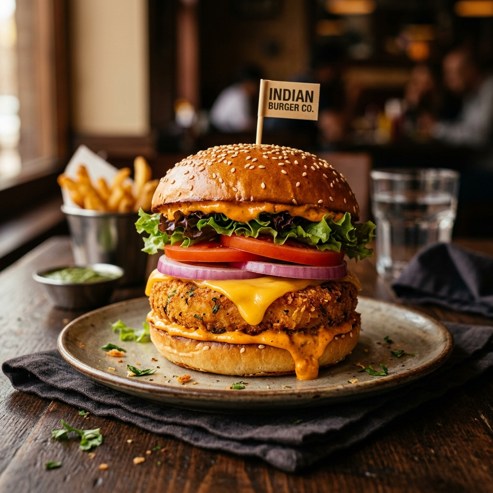

Avengers Cheeseburger-Aloo Tikki Burger
A classic fusion favorite featuring a crispy spiced aloo tikki patty and melted cheese spread in a toasted bun.

Ingredients
Tip: Tap items to check them off as you prep!
Step-by-Step Instructions
Follow steps sequentially. Mark completed steps to keep track.